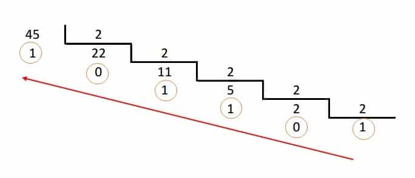
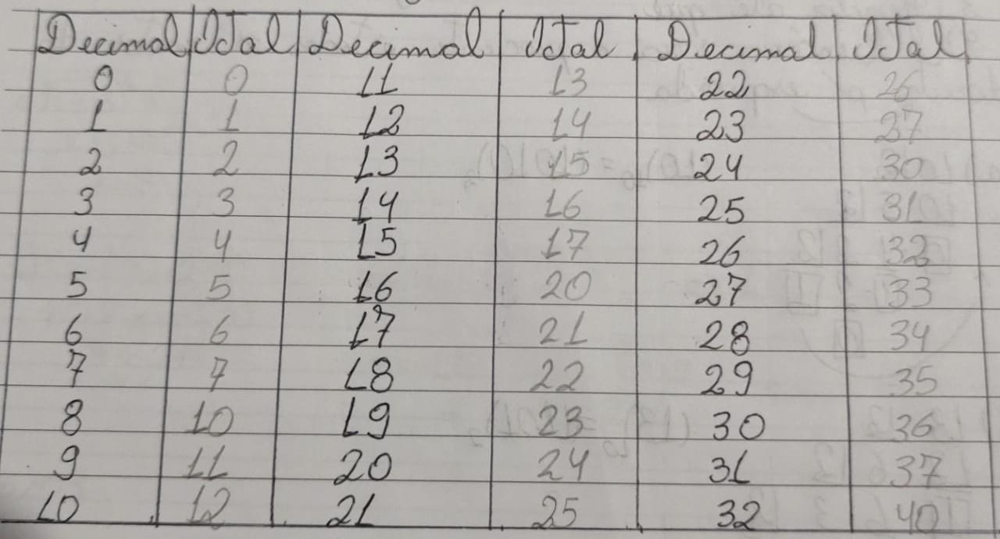
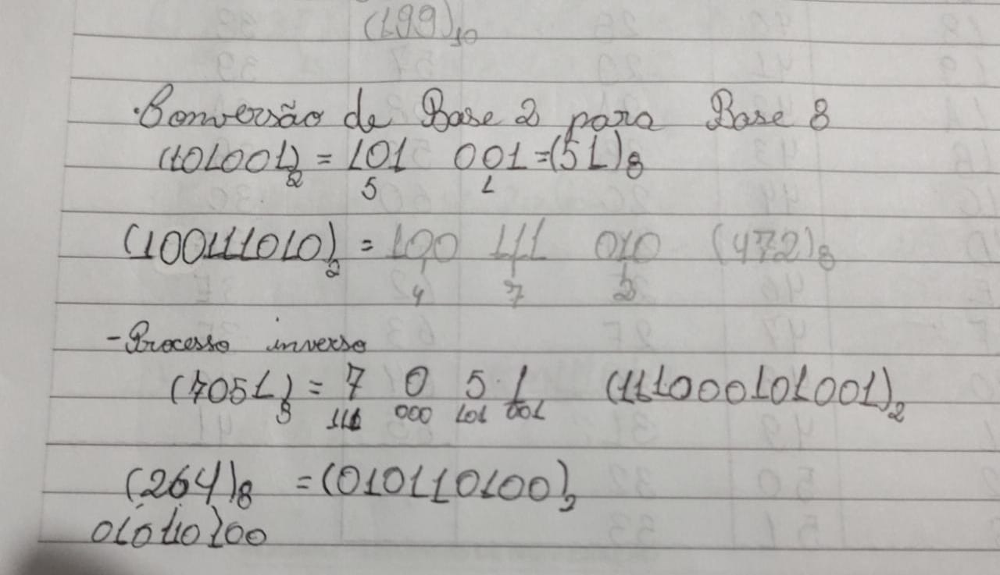
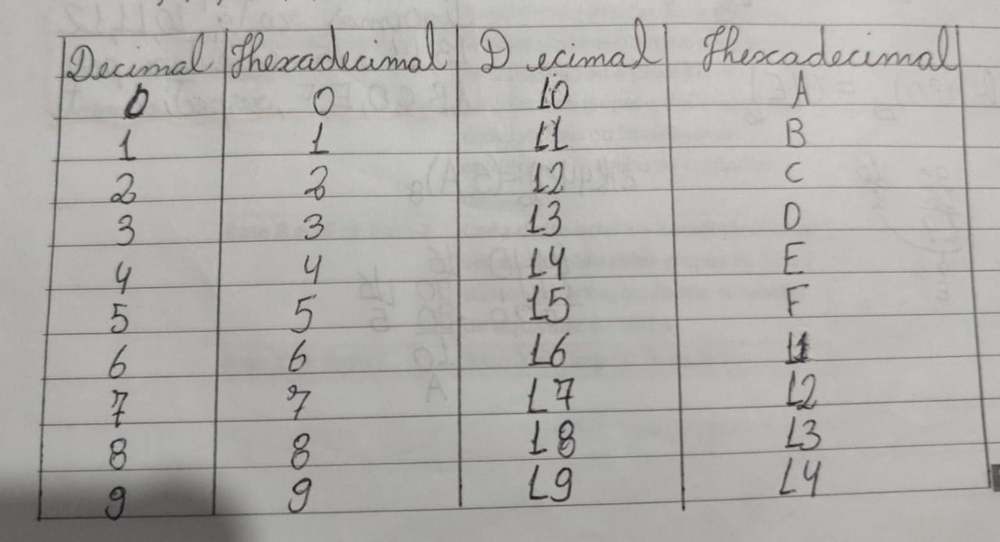
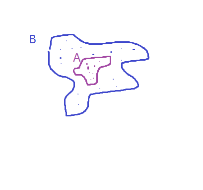
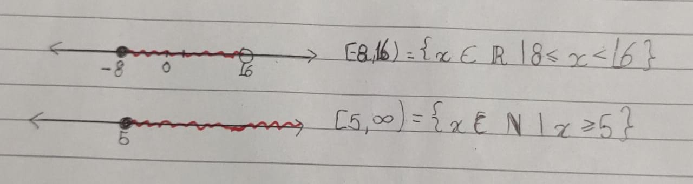

Os conteúdos foram iniciados com uma breve revisão dos conteúdos vistos no fundamental, como operações aritméticas, contas com virgula, equações de primeiro grau, etc.
Embora já tenha sido visto em outros anos sinto dificuldade em entender contas em fração pois ainda não consegui memorizar onde usar m.m.c., quando inverter, entre outros, tenho como objetivo para o segundo trimestre rever esses conceitos e tentar entendê-los.
Sistema de Numeração
Sistema Binário
O sistema binário foi o primeiro ensinado e consegui entender bem seu funcionamento com a tabela Obs.: meu caderno possui um erro na sequencia pois esqueci de iniciar com o 0. binário para decimal:Entendendo a tabela aprendemos a conversão de decimal para binário onde devemos dividir o dois e guardar o resto até que o resto seja 1.
Ex.:  Decimal para binário:devemos decompor o número multiplicando cada unidade por 2 e o expoente sendo o número da posição.
Ex.:
Também podemos fazer cálculos com números binários
Para adição usamos as seguintes explicações:
0+0
0
1+0
1
1+0
1
1+1
10 permanece o 0 e o 1 vai para a próxima posição
E para subtração:
0-0
0
1-0
1
1-1
1
0-1
é preciso pegar emprestado então 10-1=1
Sistema Octal
Dígitos de 0 a 7.

Para convertermos do decimal para o octal e de octal para decimal o processo é o mesmo que o binário pórem trocando o número 2 pelo 8 o resto do processo se mantem igual.
Para convertermos de bnário para octal separamos de 3 em 3 e consultmaos a tabela dos binários, para o processo inverso usamos o mesmo método.
ex.:

Hexadecimal
Possui 16 dígitos 16 digitos 0,1,2,3,4,5,6,7,8,9,A,B,C,D,E e F

Para a conversão de decimal para hexadecimal e de hexadecimal para decimal o processo é o mesmo de binário e de octal porém trocando pelo número 16.
De binário para hexadecimal separar em 4 e consultar a tabela de binário.
Obs.:nesses tipos de conversão quando obtemos os números 10, 11, 12, 13, 14 e 15 substituímos eles por A,B,C,D,E, e F.
Resumidamente
Conversão
procedimento
base 10 para base x
dividir pelo número x e usar o resto
base x para base 10
decomper usando o número elevado a posição
base 2 para base 8 e 16
fazer a sepaação de acordo com a base para conversão e consultar a tabla de binários
base y para base x
base y transfromamos em base 10 e depois convertemos para base x
Quando a conversão de base 2 para outra base consulto a tabela de decimal pois foi a tabela que achei mais prático.
Noção de conjunto
Conjunto é um agrupamento, uma coleção
Elemento é um membro de um conjunto
Assim relações de pertencimento são estabelecidas:
∈ -pertence ∉ - não pertence
Ex.:
“ o número 4 pertente ao conjunto B”, 4 ∈ B
“ a letra c não pertence ao conjunto A”, c ∉ A
Quando um conjunto possui só um elemento chamamos de conjunto unitário, quando não possui nenhum elemento chamamos de conjunto vazio { } ou Ø.
um conjunto é subconjunto de outro se todos os elementos pertencem a ele.

⊂- esta contido , ⊄- não contido , ⊃- contem ⊅- não contem
Conjuntos Numéricos
Números Naturais ℕ
Números simples somente positivo (0,2,3,4,5,6,7...)
Números inteiros ℤ
Números positivos e negativos (...-3,-2,-1,0,1,2,3,4,..)
Números racionais ℚ
É constituído por todos os números que forma frações.
(..-4,-3,- 2 4/5,-1,0,1/2,1,2,3..)
Neste conjunto também aprendemos dizimais periódicas
Exemplos:
0,12=12/100 1,7= 17/10
Para convertemos exemplos assim existe um método muito simples.
E também encontramos as dizimas periódicas que possuem casas decimais infinitas e para calcularmos podemos usar o exemplo a seguir.
Obs.: esse método foi apresentado por um colega e achei mais fácil
Número Misto
1 2/3, 4 8/10,etc.
Para transformarmos é muito simples
Números Irracionais 𝕀
São números que não apresentam dízima periódica e não podem ser representados por fração. números que não se pode extrair a raiz.
Como por exemplo :
√3 = 1,732050807568....
√5 = 2,236067977499...
π = 3,14159265358979323846… = comprimento de circunferência
Números Reais ℝ
É a união dos irracionais com os racionais
Podendo preencher toda a reta a chamamos de reta numérica, e iremos estabelecer relações de desigualdade por símbolos.
<, ≤, > e ≥
ex.:
A < B = A menor que B
B ≤ C= B menor ou igual a C
aprendemos também intervalos númericos
intervalos abertos é usado []
intervalos fechados ()
é podem ser representados de duas formas (a,b]
{x ∈ (aqui se coloca a qual conjunto númerico ele pertence) | a < x ≤ b}

Múmeros Complexos ℂ
Não entendi muito bem esse conjunto, mas basicamente se trata de números reais ou imaginários que precisam existir devido a variedade de respostas para as equações algébricas
Operações entre conjuntos
União
quando queremos juntar elementos, símbolo ∪
A= (1,2,3,4,5) e B=(6,7,8)
A ∪ B (1,2,3,4,5,6,7 e 8)
Intersecção
Quando queremos saber quais números pertencem a 2 ou mais conjuntos ,símbolo ∩
A(2,3,4,5) e B= (1,2,4,8,9)
A ∩ B =(2 e 4)
Diferença
números que não são em comum entre os conjuntos
A(2,3,4,5) e B= (1,2,4,8,9)
A-B = (1,3,8,9)
Noção de função e função afim
É usado quando um valor depende de outro existindo uma relação de dependência
a expressão matemática é:
a e b- valores
x - é a variável independente
y ou f (x)- variável dependente
Ex.:supondo que em uma pequena indústria temos um custo fixo de 40,00 reais e um custo variável de 1,00 real por unidade produzida.
a função já elaborada é f(x) 1,00.x+40,00
então para sabermos o custo de 50 peças substituímos o x pelo valor
f(x) = 1,00*50+40 dando assim 450 reais
Para aprendermos o conteúdo de funções, fizemos um trabalho no Scratch, uma máquina de funções onde deveríamos elaborar algo para enviar para a professora.
Autoavaliação
Apesar de ser uma matéria onde costumo encontrar certa dificuldade achei que esse trimestre bem tranquilo, superando minhas expectativas, acredito ter entendido bem a matéria e
os assuntos onde tive dúvida consegui entender relendo o conteúdo e os fazendo os exercícios, as dificuldades que tenho já trago comigo a anos, mas pretendo estudar no segundo
trimestre para que não venham a prejudicar minhas notas e meu aprendizado.
A professora tem uma explicação clara sempre sanando dúvidas, achei o trabalho muito divertido, a proposta da professora em deixar usar resumo na prova é algo que gostei muito
já que podemos colocar o que costumamos esquecer e também incentiva a relembrarmos o conteúdo caso tenhamos esquecido algo importante, além de deixar a prova com um “ar” mais tranquilo.